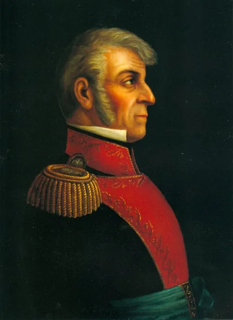

OKpolítico
OKpolítico1811: El Gobierno de la Resistencia

En esta tercera y última parte de 1811, exploramos cómo la insurgencia mexicana sobrevivió a la ejecución de Hidalgo y Allende. Analizamos la creación de la Suprema Junta Nacional Americana en Zitácuaro bajo el liderazgo de Ignacio López Rayón, el primer intento de dotar al movimiento de una estruct
Compartir por WhatsApp▶ Ver este video en YouTube y suscríbete
El nacimiento de la Suprema Junta
Al iniciar septiembre de 1811, el panorama para la insurgencia parecía desolador tras el fusilamiento de los iniciadores en Chihuahua. Las cabezas de Hidalgo, Allende, Aldama y Jiménez habían sido enviadas a Guanajuato para ser exhibidas como un recordatorio brutal del costo de la traición a la Corona.
Sin embargo, en el corazón de Michoacán, un hombre que había sido secretario de Hidalgo, Ignacio López Rayón, comprendió que el movimiento necesitaba una cabeza política para no fragmentarse en bandas de bandoleros sin rumbo.
✉️ Recibe lo importante del día en tu correo. Suscríbete gratis →Rayón sabía que la fuerza militar por sí sola no bastaba; se necesitaba legitimidad. Si la insurgencia quería ser tratada como un ejército beligerante y no como una horda de criminales, debía constituirse en gobierno.
El desplazamiento del eje insurgente hacia el sur no fue solo geográfico, sino ideológico: de la destrucción del antiguo régimen a la construcción de uno nuevo. En la villa de Zitácuaro, entre el 19 y el 21 de agosto de 1811, Rayón formaliza la Suprema Junta Nacional Americana.
Este órgano estaba integrado inicialmente por él mismo como presidente, junto a José Sixto Verduzco y José María Liceaga. La elección no fue al azar; representaba un intento de coalición entre las distintas facciones que aún quedaban en pie.
Curiosamente, este órgano no buscaba una ruptura total inmediata con la monarquía. Su estrategia era gobernar en nombre del cautivo Fernando VII. Esta 'máscara de Fernando VII', como la llamarían después algunos historiadores,
era una herramienta política sofisticada: permitía atraer a criollos moderados que temían el caos social y a militares realistas que dudaban de la legitimidad de las autoridades virreinales bajo el dominio francés en España. La Junta se presentaba no como una rebelión contra el Rey, sino como la verdadera guardiana de sus derechos en América frente a la supuesta entrega de la península a Napoleón.
La Junta comenzó a ejercer funciones de Estado de manera inmediata, desafiando la noción de que los insurgentes eran solo guerrilleros. Nombró autoridades locales en los pueblos bajo su control, estableció un sistema fiscal basado en alcabalas y el control del aguardiente,
e incluso comenzó a acuñar su propia moneda de plata y cobre para sostener la guerra. Pero quizás su avance más significativo fue en el terreno de la opinión pública.
Conscientes de que la guerra se ganaba también en las mentes, fundaron periódicos como 'El Ilustrador Americano'. A través de estas páginas, se difundían las ideas de soberanía y se respondía a la propaganda virreinal.
Para la administración de Rayón, la imprenta era tan vital como el fusil. Este fue el primer intento serio de institucionalizar la nación mexicana, creando una burocracia rebelde que, aunque precaria, funcionaba y recaudaba recursos de manera organizada.
La respuesta de la Corona y el ascenso de Calleja
El virrey Francisco Javier Venegas observaba con alarma desde el Palacio Real cómo la rebelión, que el gobierno central daba por extinta tras la caída de Hidalgo, mutaba en un gobierno paralelo. La situación económica del virreinato era crítica. El déficit de la Real Hacienda se había incrementado sustancialmente desde el inicio de la guerra,
superando ya el millón de pesos anuales debido a la interrupción del comercio y la caída de la recaudación. Venegas emitió bandos urgentes para intentar asfixiar económicamente a los rebeldes, prohibiendo cualquier trato comercial con las zonas controladas por la Junta.
Sin embargo, la realidad era que el control virreinal se limitaba a las grandes ciudades y los caminos principales, mientras que el campo empezaba a reconocer la autoridad de Zitácuaro. La existencia de un gobierno que cobraba impuestos y administraba justicia era un golpe directo a la línea de flotación de la soberanía española en América.
Félix María Calleja, el brazo armado más eficaz del virreinato, no tardó en reaccionar. Desde su cuartel en Guanajuato, Calleja comprendió que la Junta de Zitácuaro era un peligro mucho mayor que las hordas de Hidalgo, porque ofrecía una alternativa política.
El 28 de septiembre de 1811, lanzó una proclama feroz: ofreció una recompensa de 10,000 pesos por la cabeza de Rayón o de cualquier vocal de la Junta,
ya fuera vivos o muertos. Los calificó de facciosos, ilegítimos y traidores a la patria. Calleja no solo buscaba la eliminación física de los líderes, sino su deslegitimación total ante la sociedad novohispana.
Para el alto mando realista, no podía haber dos soles en el mismo firmamento: o gobernaba la Regencia en España, o no gobernaba nadie. El argumento de Calleja era legalista: sostenía que la única autoridad legítima eran las Cortes de Cádiz,
que en esos mismos meses de 1811 debatían en España una nueva constitución que prometía transformar la monarquía en un sistema constitucional. La guerra, por tanto, ya no era solo un conflicto de balas, sino una batalla por la representación. ¿Quién representaba realmente al pueblo novohispano?
¿Los diputados que enviaba la élite a Cádiz o los vocales que se reunían en una villa de Michoacán? Esta disputa obligó a la insurgencia a profundizar en sus propios argumentos jurídicos,
llevando a Rayón a redactar los primeros borradores de lo que serían los 'Elementos Constitucionales', el primer esfuerzo por dar una ley fundamental a la América Mexicana.
Morelos y el Rayo del Sur
Mientras Rayón intentaba organizar la arquitectura política en el centro del país, en el sur emergía una figura que cambiaría el curso de la guerra: José María Morelos y Pavón. A diferencia de los líderes anteriores, Morelos demostró una disciplina militar inédita. Entre octubre y diciembre de 1811,
el cura de Carácuaro inició una serie de campañas relámpago que pondrían en jaque el control español sobre las costas del Pacífico y las rutas comerciales hacia la capital. Morelos no buscaba el número, sino la eficacia.
Sus tropas, aunque menores en cantidad, estaban compuestas por hombres que conocían el terreno y operaban bajo una jerarquía estricta. Lugares como Tlapa, Chiautla e Izúcar cayeron bajo su control, extendiendo la mancha insurgente por todo el actual estado de Guerrero y Puebla.
El contraste con la etapa de Hidalgo era absoluto. Morelos operaba con ejércitos pequeños, bien armados y altamente entrenados, evitando las masacres innecesarias que habían desprestigiado al movimiento en 1810.
En diciembre de 1811, sus tropas realizaron una maniobra estratégica magistral al tomar Taxco, un centro minero vital que proporcionaba recursos frescos a la causa. Pero el golpe definitivo del año ocurrió en la Nochebuena de 1811, cuando Morelos entró en la estratégica población de Cuautla.
Esta posición no solo amenazaba directamente el suministro de azúcar y productos agrícolas a la Ciudad de México, sino que colocaba a los insurgentes a las puertas de la capital del virreinato. El 'Rayo del Sur' se había convertido en la mayor pesadilla militar de Venegas.
A pesar de su creciente poder, Morelos tomó una decisión política fundamental: reconoció la autoridad de la Junta de Zitácuaro. Aunque mantenía diferencias estratégicas con Rayón —especialmente respecto a la 'máscara' de Fernando VII, pues Morelos ya vislumbraba una independencia total y republicana—,
entendió que la unidad era la única forma de sobrevivir. Fue nombrado cuarto vocal de la Junta, lo que otorgó al órgano de Zitácuaro el respaldo de la fuerza militar más efectiva del momento.
Esta alianza, aunque tensa y marcada por la dificultad de comunicación en un territorio en guerra, permitió que la insurgencia presentara, por primera vez, un frente unido y una estructura de mando clara ante las potencias extranjeras y el propio gobierno español.
El mundo en 1811: Cádiz y la libertad de vientre
Para entender 1811, hay que mirar más allá de las fronteras de Nueva España. Al otro lado del Atlántico, en una Cádiz sitiada por las tropas de Napoleón,
los diputados novohispanos como Miguel Ramos Arizpe luchaban en las Cortes por la igualdad de derechos entre peninsulares y americanos. El 18 de agosto de 1811 se había presentado el proyecto de lo que sería la Constitución de 1812.
Las discusiones eran acaloradas: se hablaba de soberanía nacional, de libertad de imprenta y del fin del absolutismo. Mientras en México se peleaba con pólvora, en Cádiz se peleaba con palabras que tenían el mismo potencial explosivo.
El liberalismo español intentaba salvar el imperio transformándolo, pero para muchos en América, las reformas llegaban demasiado tarde y eran demasiado limitadas. En el resto del continente, el espíritu de autonomía era ya un incendio incontrolable. 1811 fue el año de las definiciones para Hispanoamérica.
El 11 de noviembre, la provincia de Cartagena de Indias declaró su independencia absoluta de España, rompiendo todo vínculo con la Corona. Poco después, el 21 de diciembre, Venezuela promulgó su primera Constitución federal, convirtiéndose en la primera nación de habla hispana en adoptar un modelo republicano moderno.
Estos eventos no eran desconocidos para los líderes en México; las noticias circulaban a través de los puertos y reforzaban la convicción de que el sistema colonial estaba colapsando en todo el hemisferio. La lucha de Rayón y Morelos era parte de una marea continental.
Incluso en el Cono Sur, se daban pasos radicales que iban más allá de la política y tocaban la fibra social. El 15 de octubre de 1811, Chile promulgó la ley de 'libertad de vientre', una medida revolucionaria que otorgaba la libertad automática a los hijos de esclavos nacidos en el territorio.
Este hito en los derechos humanos marcaba una diferencia fundamental entre el viejo orden monárquico y las nuevas repúblicas en ciernes. En México, Hidalgo ya había decretado la abolición de la esclavitud en 1810, y en 1811,
la Junta de Zitácuaro y Morelos mantenían esa bandera en alto, integrando a poblaciones afrodescendientes e indígenas en una lucha que buscaba no solo un cambio de gobierno, sino una transformación de la estructura social.
Economía de guerra y crisis minera
Detrás de las batallas, la economía de la Nueva España se desmoronaba. El virreinato, que había sido el motor financiero del Imperio español, estaba viendo cómo su 'capitalismo de la plata' se destruía.
Para finales de 1811, la producción minera en centros neurálgicos como Guanajuato y Zacatecas se había desplomado casi a la mitad. Las minas estaban inundadas, los trabajadores habían huido a los ejércitos y el transporte de metales se había vuelto una misión suicida.
El sistema de convoyes protegidos no bastaba, y el virrey se vio obligado a descentralizar la acuñación, autorizando casas de moneda provinciales en Chihuahua y Durango para evitar que la plata fuera capturada por los insurgentes en el camino a la capital.
La moneda, antes símbolo de estabilidad, se volvía escasa y de mala calidad. Para financiar la defensa del régimen, el gobierno virreinal recurrió a medidas desesperadas.
Se impusieron gravámenes extraordinarios a productos de consumo popular como el vino de mezcal y se crearon impuestos sobre las mercancías que utilizaban los convoyes militares. La Real Hacienda cerraría el periodo de 1812 con un déficit acumulado de casi 3 millones de pesos, una cifra alarmante comparada con el millón registrado en 1810.
Para cubrir el hueco, el virrey Venegas dependía cada vez más de préstamos forzosos exigidos al clero, a los comerciantes del Consulado y al Tribunal de Minería. Esta presión fiscal empezó a erosionar el apoyo de las élites criollas al gobierno virreinal; muchos empezaron a preguntarse si no sería más barato negociar con la insurgencia que seguir financiando una guerra que parecía no tener fin y que estaba devorando sus fortunas.
El cierre de un año sangriento
El año 1811 terminó con una Nueva España fracturada, pero políticamente mucho más compleja que 12 meses atrás. La insurgencia ya no era una masa informe de campesinos movidos por el hambre y el fervor religioso; se había transformado en un movimiento con un gobierno establecido en Zitácuaro,
una diplomacia incipiente y un ejército profesional en el sur bajo el mando de Morelos. El territorio estaba dividido en zonas de influencia donde la autoridad del virrey era puramente nominal.
En las montañas de Michoacán y las selvas del sur, se estaba gestando un nuevo orden que ya no aceptaba las órdenes de Madrid. La muerte de Hidalgo no había sido el fin, sino el doloroso parto de una estructura política que reclamaba su lugar en el mundo.
Aunque los realistas mantenían el control de las principales ciudades, los puertos y las rutas hacia el exterior, el control territorial efectivo se les escapaba de las manos. La noche de fin de año de 1811, los centinelas en las murallas de la Ciudad de México miraban hacia el sur con temor,
sabiendo que Morelos estaba a pocos días de marcha. La promesa de una constitución liberal desde España y la realidad de un gobierno rebelde en el corazón de México preparaban el escenario para un 1812 que definiría el destino del virreinato.
La guerra civil estaba lejos de terminar; apenas estaba entrando en su fase más organizada, política y brutal. La resistencia había sobrevivido a sus fundadores, y ahora, buscaba su independencia.
Sigue viendo
Con información de
Del Arenal Fenochio, Jaime. Cronología de la Independencia (1808-1821). INEHRM. · Sánchez Santiró, Ernest. La irrupción del liberalismo fiscal en Nueva España. Scielo. · INEHRM. La Junta Suprema Nacional Americana o Junta de Zitácuaro.